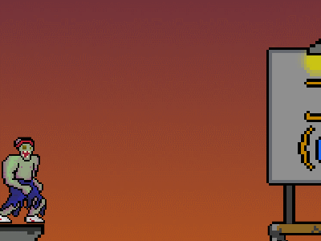
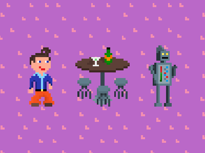
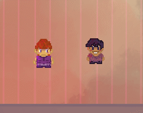
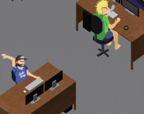

Volunteer work
Tutor
In 2018, I approached a local organism looking for volunteers and they put me on tutoring because of my level of education. This is where I discovered a talent for interacting with kids and helping them improve their relation towards academics endeavours. While being a tutor for le Chateau d'Aurore, I had the pleasure to work with and for great people.
Webmaster
This organism was founded by and is run partly by members of my extended family. They approached me to seek help managing the website. As the webmaster, I will periodicly update pages and add news with pictures and information relevant to the members.
Vice-president sponsors (Winter 2015 to Winter 2016)
This student association was the conduit to all of my implication during my UQAC's bachelor degree in computer science en video game design. As the vice-president sponsors, I had to contact new sponsors, keep in touch with existing ones and report to the executive comity.
Vice-president extern (Winter 2016 à Autumn 2016)
As the vice-president extern (vice-président aux affaires externes) I had to represent my association inside of the Mage-UQAC and along all of the other students association. I had to be the relay from all of the students in maths and computer science to the regroupment of all the association (the Mage-UQAC). I had to sit through lenghty and procedural meetings with all the other extern vps.
President (1st may 2016 to 1st may 2017)
For my last year of my Bachelors degree in computer science, I was elected president of my student association. As the president, I had to find other volunteers to help me do all that there is to do for the AEMI (association des étudiant.e.s en mathématique et informatique). I was very proud of the team and each member and what we all did together. The team was solid and almost filled and we did great impressions on the students and the university. I was even awarded personality of the year that year hahaa...
Volunteer
The Wonderlan is a weekend of competitive gaming but also all of the planning that's involved in hosting such an event. For my first semester at the university, I wanted to meet new people and volunteer in my student association. So I was thrilled to learned about this opportunity. I helped by placing tables and cables, setting up players and pc. Answering questions and helping overall.
Vice-president extern
As part of my second year of volunteering for the WonderLAN, I was entrusted with the role of contacting partners for the event. Mediatise the event, on facebook and local medias. This edition (2015) was the biggest I was part of with over 200 attendees at the university cafeteria for over 48 hours straight.
Volunteer
J'ai tellement apprécier mes deux premières expériences de Game Jam (voir ci-bas) que j'ai décider de m'impliquer dans l'organisation du Game Jam de l'UQAC, le WonderJAM. C'est ainsi que, lors de ma deuxième année de baccalauréat nous avons redéfinis certains styles de jeux que nous imposons aux équipes ainsi que la mise en place du centre social pour l'événement. J'ai aussi été interrogé par plusieurs médias rérionaux tels que Radio-Canada, KYK radio X et TVDLDERY (vidéo ci-jointe).
President
Finalement, je me suis présenté lors de ma dernière année d'études à la présidence de ce Game Jam afin de faire vivre à d'autres jeunes étudiants l'expérience inoubliable d'un Game Jam. Tout comme la présidence de l'AEMI, mon rôle est de réunir une équipe de gens solides et motivés afin que toutes les tâches menant à la réalisation de l'Événement soient réalisées. Lors de mon passage en tant que président du WonderJam, l'événement a reçu le prix du projet de l'année dans le cadre du gala de l'implication MAGE-UQAC 2016-2017.
Writer
Depuis 2014, j'ai travaillé à temps perdu pour l'équipe de Multijoueur.ca. J'ai écrit plusieurs brève sur l'actualité, des critiques complètes de jeux AAA ou indépendants. Étant un grand fan de podcast, j'ai aussi créé les bases de ce qui est devenu le podcast hebdomadaire de Multijoueur. Finalement et plus récemment, j'ai démarré la série "Rapide et dans le jeu" tel que présenté dans la vidéo ci-présente. Cette série se veut un aperçu rapide de jeux Steam sous la bannière Early Access.
Game Jams

Le thème : la face cachée des zombies;
Les styles imposés: Beat'em up, Course
Zombo
Encore dans ma première session d'études et avec presque aucunne expérience de programmation, je m'embarque avec une équipe composée uniquement d'étudiants en première session du baccalauréat en conception de jeux vidéo pour mon premier Game Jam. Je me suis affairé principalement à supporter les membres de mon équipe que ce soit sur le visuel esthétique style 8 bits, le level design ou alors l'animation du feed twitter.
Prix obtenu : coup de coeur du jury

Le thème : plus de peur que de mal;
Les styles imposés: Romance, Tour par tour
Wondrous Pixelated Dating Night at Crazyland
Avec la même équipe que le WonderJam A2014, j'embarque avec plus de confiance dans le deuxième Game Jam de mon existance. Toujours quelque peu débutant en programmation, je m'affaires surtout à travailler sur le scripting des dialogues (les dialogues étants très importants dans le jeu), quelques éléments visuels et les effets sonores.
Prix obtenus:
- Première place
- Coup de coeur du jury

Le thème : Connexion;
Les styles imposés: Exploration, Action
Cheat Sheet
Pour cette édition du WonderJam, mon but était de faire participer le plus de gens possible qui étudiaient en conception de jeux vidéo et qui n'avait jamais fait de Game Jam auparavant. C'est ainsi que notre équipe comportait 4 débutants très doués en programmation ou en art visuel, mais sans expérience avec les moteurs de jeu. Pour ma part, je me suis encore attardé à trouver les effets sonores, la musique et configuré toutes les animations du jeu.
Nous avons obtenu le prix non-officiel du jeu le plus badass grâce à des qualités peu comunes telles que la présence d'une intelligence artificielle, deux styles de gameplay différents, des niveaux de difficulté, etc.

Le thème : Le jugement;
Les styles imposés: Gestion, Compétition multijoueur
WonderJam Tycoon
Pour ce jam, nous avons encore une fois embarqué deux personnes dans l'équipe qui n'avait jamais participé à un Game Jam de leur vie. Malgré tout, le jeu créé est certainement un de ceux que je suis le plus fier à ce jour. Mon travail a été de créer les classes et les superclasses des personnages et de leurs statistiques qui devront alors interagir avec le pointage final selon les données fournies par les joueurs (1v1). J'ai aussi fait le voice acting avec joie.
La sélection des gagnants n'a toujours pas eu lieu.
Various projects
Sumo resto
C'est dans le cadre du cours de réalisation d'un jeu vidéo qu'une équipe de 4 programmeurs de l'UQAC (moi y compris) ont été jummelé à une équipe d'artistes visuels du NAD. Pour ce projet, nous avions à créer la programmation derrière un jeu mobile sur tablette qui utilisait les "motions controls" de celle-ci.
Inner Strike
Suite au cour de réalisation d'un jeu vidéo, les programmeurs de l'UQAC et les artistes du NAD se sont réunis encore une fois pour élaborer d'avantage les concepts réalisés précedemment. J'ai été jummelé à l'équipe d'inner strike et j'ai principalement créé des outils pour les joueurs et les développeurs, des feedbacks visuels et quelques fonctions de support.
DinoParc
Ce projet est né du cours de conception de jeux vidéo de la première session d'études où nous devions créer un jeu de société complet comme travail de fin de session. Étant un amateur averti des jeux de société, j'avais déjà quelques idées en tête de jeux que l'on pourrait créer. En équipe de 4 personnes, nous avons donc créer un jeu de société de gestion où les joueurs s'affrontent dans la création du meilleur parc jurassique jamais créé. Pour ce travail, nous avons obtenu une excéllente note et le jeu était plutôt amusant. C'est ainsi que, trois sessions plus tard, nous avons décidé de recréer ce jeu de société sous forme de jeu vidéo à l'aide de l'engin Unity. En travaillant avec les méthodes agiles, nous avons réussi en bout de ligne à avoir un jeu fonctionnel.
Projet Défis
Saguenay Média est une agence de communication de Chicoutimi spécialisée dans la création de sites web.
Étant employé par cette agence en tant que conseillé médias, j'ai eu l'opportunité de faire un stage pour lequel je devais programmer les bases d'une application web de style média social. En langages HTML5 et PHP, j'ai construit les bases du projet qui permettra aux utilisateurs de réaliser et de partager divers défis de toutes natures.
Unchained
En collaboration avec le centre NAD-UQAC et le studio CassetteHead, nous avons participé au concours universitaire Ubisoft. Cette année, le concours imposait la création d’un jeu multijoueur LAN ou en ligne dont le gameplay devait être asymétrique et qui devait contenir une intelligence artificielle. De plus, le thème était «jouer avec le temps» et le jeu devait donc inclure une mécanique reliée au temps. À l’aide de 4 artistes du NAD, 2 sourds designers indépendants et 4 programmeurs de l’UQAC (incluant moi), nous avons conçu Unchained.
Je dois dire que ce projet a été le plus important de mon parcours jusqu’à ce jour et je suis extrêmement fier du résultat. Nous n’avions que 10 semaines pour créer le prototype et nous avons su travailler comme des acharnés pour obtenir le résultat final. Au départ, j’ai travaillé sur le gameplay côté monstre, mais par la suite j’ai du me convertir en programmeur UI puisque les autres programmeurs étaient occupés à d’autres tâches importantes comme la programmation de l’AI, le réseautage, le gameplay ou la génération procédurale. Bref, je suis extrêmement fier du résultat de notre dur labeur.
Nominations :
- Meilleur défi technique et innovation
- Meilleure expérience utilisateur
- Meilleur prototype
Lauréat :
- Meilleur défi technique et innovation